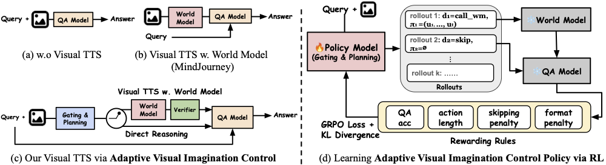
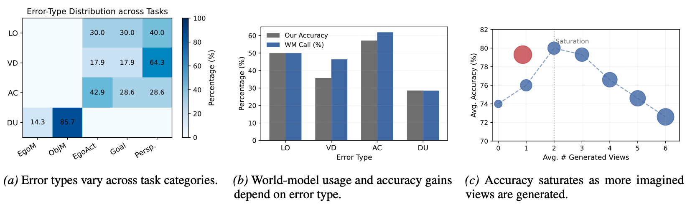
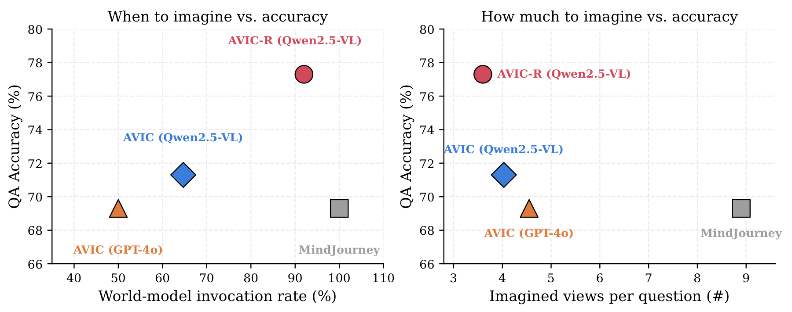
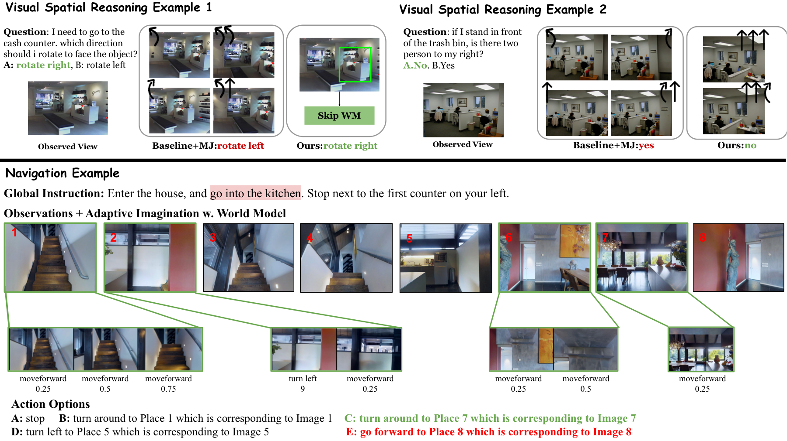

Abstract
Despite rapid progress in Multimodal Large Language Models (MLLMs), visual spatial reasoning remains unreliable when correct answers depend on how a scene would appear under unseen or alternative viewpoints. Recent work augments reasoning with world models for visual imagination, but when imagination is necessary, how much is beneficial, and when it becomes harmful remain poorly understood. In practice, indiscriminate imagination can increase computation and even degrade performance by introducing misleading evidence. We present an in-depth analysis of test-time visual imagination as a controllable resource for spatial reasoning. We first study when static visual evidence is sufficient, when imagination improves reasoning, and how excessive or unnecessary imagination affects accuracy and efficiency. We then introduce AVIC, an adaptive test-time framework that reasons about the sufficiency of current visual evidence before selectively invoking and scaling visual imagination. Finally, we introduce AVIC-R, which learns the gating and planning behavior end-to-end with GRPO from QA-correctness rewards and imagination-cost penalties, without supervision on when or how much to imagine. Across SAT, MMSI, and R2R, selective control matches or outperforms fixed imagination strategies with far fewer world-model calls and language tokens, and AVIC-R surpasses strong proprietary-policy baselines while invoking the world model less often.
Method

Results on SAT-Real
| QA Model / Method | Policy | EgoM | ObjM | EgoAct | Goal | Pers | Avg. | # Token (K) | Avg. WM |
|---|---|---|---|---|---|---|---|---|---|
| InternVL3-14B | -- | 56.5 | 69.5 | 54.0 | 73.5 | 45.4 | 59.3 | 0.2 | 0 |
| + MindJourney | -- | 69.6 | 60.9 | 78.4 | 79.4 | 42.4 | 66.7 | 2.5 | 12.34 |
| + AVIC | InternVL3-14B | 95.6 | 73.9 | 62.1 | 76.4 | 42.4 | 68.0 | 2.0 | 0.64 |
| + AVIC-R | Qwen2.5VL-7B | 82.6 | 52.1 | 70.2 | 85.2 | 54.5 | 69.3 | 4.8 | 3.03 |
| GPT-4o | -- | 56.5 | 85.0 | 50.0 | 64.0 | 45.0 | 60.3 | 0.9 | 0 |
| + MindJourney | -- | 78.3 | 60.9 | 78.4 | 70.6 | 57.5 | 69.3 | 26.0 | 12.34 |
| + AVIC | GPT-4o | 86.9 | 60.9 | 64.8 | 82.3 | 48.4 | 69.3 | 9.5 | 0.72 |
| + AVIC-R | Qwen2.5VL-7B | 82.6 | 82.6 | 81.0 | 91.1 | 51.2 | 77.3 | 5.4 | 3.03 |
| GPT-4.1 | -- | 95.7 | 73.9 | 78.3 | 88.2 | 39.4 | 74.0 | 0.7 | 0 |
| + MindJourney | -- | 100.0 | 82.6 | 86.5 | 79.4 | 45.4 | 77.3 | 67.1 | 12.34 |
| + AVIC | GPT-4.1 | 100.0 | 78.2 | 83.7 | 85.2 | 54.5 | 79.3 | 7.6 | 0.73 |
| + AVIC-R | Qwen2.5VL-7B | 91.3 | 86.9 | 83.7 | 85.2 | 57.5 | 80.0 | 5.2 | 3.03 |
| o1 | -- | 78.3 | 82.6 | 73.0 | 73.5 | 69.7 | 74.6 | 1.4 | 0 |
| + MindJourney | -- | 100.0 | 65.2 | 78.4 | 82.4 | 63.7 | 77.3 | 39.4 | 12.34 |
| + AVIC | o1 | 100.0 | 86.9 | 86.4 | 91.1 | 66.6 | 85.3 | 14.6 | 1.28 |
| + AVIC-R | Qwen2.5VL-7B | 86.9 | 65.2 | 81.0 | 94.1 | 69.6 | 80.0 | 6.1 | 3.03 |
Results on MMSI
| Method | Accuracy |
|---|---|
| GPT-4o | 30.3 |
| GPT-4o + AVIC | 32.3 |
| GPT-4.1 | 30.9 |
| GPT-4.1 + AVIC | 33.8 |
Results on R2R
| Method | LLM | NE ↓ | OSR ↑ | SR ↑ | SPL ↑ |
|---|---|---|---|---|---|
| NavGPT | GPT-3.5 | 8.02 | 26.4 | 16.7 | 13.0 |
| MapGPT | GPT-4 | 5.80 | 61.6 | 41.2 | 25.4 |
| MapGPT | GPT-4o | 6.04 | 41.6 | 36.0 | 30.8 |
| MapGPT + AVIC | GPT-4o | 5.97 | 45.3 | 37.5 | 31.9 |
When and How Much a World Model is Needed for Visual Spatial Reasoning?

Across our analysis, we found:
(1) World models should be used selectively, primarily when spatial reasoning requires predicting future states under hypothetical actions, rather than reinterpreting existing visual evidence.
(2) Visual spatial reasoning benefits most from targeted rather than extensive world-model imagination. A small number of informative views captures most of the benefit, while excessive rollouts introduce redundant or noisy evidence.
(3) AVIC-R learns these behaviors from QA correctness and world-model cost alone: it calls the world model more often on action-conditioned questions, uses fewer imagined views than always-on imagination, and reaches higher accuracy at lower cost.

Ablation Studies
| Action Scaling | Gating | World Model | Avg. WM | Accuracy |
|---|---|---|---|---|
| -- | -- | -- | 0 | 74.0 |
| -- | -- | ✓ | 12.34 | 77.3 |
| -- | ✓ | ✓ | 0.51 | 73.3 |
| ✓ | ✓ | ✓ | 0.73 | 79.3 |
Qualitative Analysis

Qualitative examples on SAT of the always-on imagination method and our adaptive method, as well as the R2R navigation task. In the navigation example, the green option is selected by the model with adaptive imagination via our method, while the red one is without world model imagination. We compare our adaptive visual TTS method with the always-on imagination method, MindJourney (MJ). In the first example, the target object (the cash counter) is already clearly visible in the observed view. Our method correctly identifies that additional visual imagination is unnecessary and directly skips world model. In contrast, MJ indiscriminately invokes the world model, generating multiple imagined views that introduce misleading evidence and ultimately lead to an incorrect prediction. In the second example, AVIC yields the correct answer by selectively imagining the state where the agent is in front of the trash bin. In contrast, MJ performs dense imagination and generates views that do not accurately reflect this critical spatial condition, leading to an incorrect prediction. Furthermore, we present a qualitative navigation example at the bottom. Our adaptive visual test-time scaling selectively augments informative indoor observations (e.g., zooming in or turning to explore nearby views), enabling the agent to better inspect the environment and align its actions with the global instruction (“go to the kitchen”). In contrast, the baseline without visual imagination lacks sufficient perceptual evidence and consequently chooses an incorrect direction.
BibTeX
@article{yu2026when,
author = {Shoubin Yu, Yue Zhang, Zun Wang, Jaehong Yoon, Huaxiu Yao, Mingyu Ding, Mohit Bansal},
title = {When and How Much to Imagine: Adaptive Test-Time Scaling with World Models for Visual Spatial Reasoning},
journal = {arxiv: 2602.08236},
year = {2026},
}